Her format, kendi verisiyle
Aşağıdaki görüntülerin her biri uygulamanın kendisinden alındı; veriler örnek amaçlı hazırlandı. Bir formatı seçin.
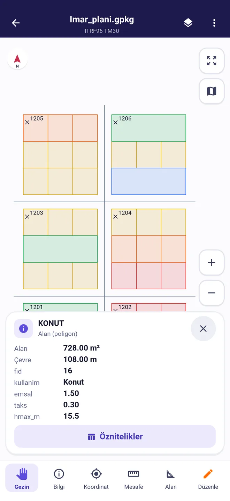
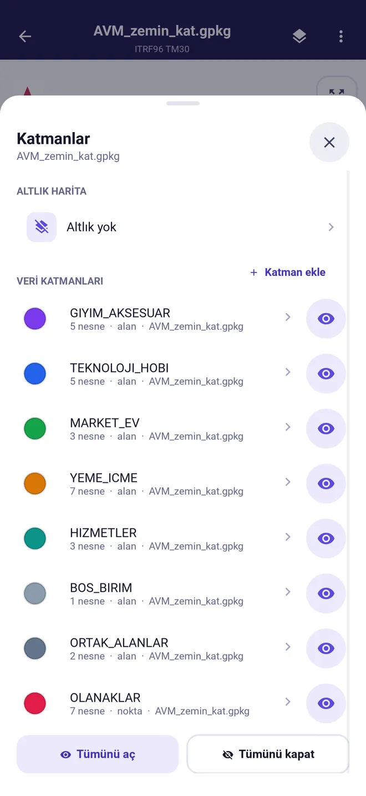
GeoPackage ve Shapefile
Çok katmanlı GIS projelerini olduğu gibi açın. İlk örnek bir uygulama imar planı: konut, ticaret, eğitim ve park alanları; bir parsele dokununca emsal, TAKS ve Hmax görünür. İkincisi bir AVM zemin katının katmanları.
- Katmanları tek tek açın, kapatın, rengini değiştirin
- Başka bir dosyadan katman ekleyin
- Shapefile'ı .shp olarak ya da .shp, .dbf, .shx, .prj içeren ZIP olarak açın
- Koordinat sistemi .prj ve GeoPackage'dan okunur
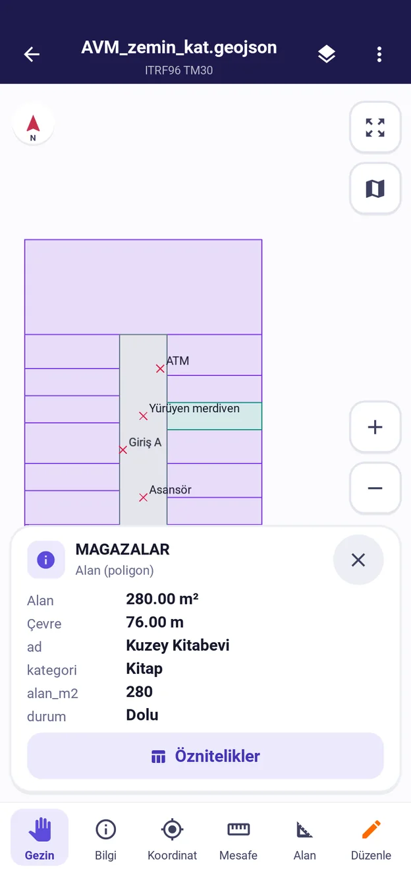
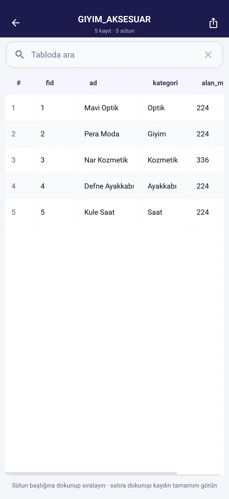
GeoJSON
QGIS'ten, bir web servisinden ya da başka bir uygulamadan gelen GeoJSON'u açın. Bir objeye dokunun: alanı, çevresi ve bütün öznitelikleri görünür; öznitelik tablosunda arayıp sıralayın.
- Alan m² ve hektar, çevre metre olarak
- Çok parçalı geometriler ve delikli alanlar
- WGS84 koordinatları TM, UTM veya enlem/boylam olarak okunur
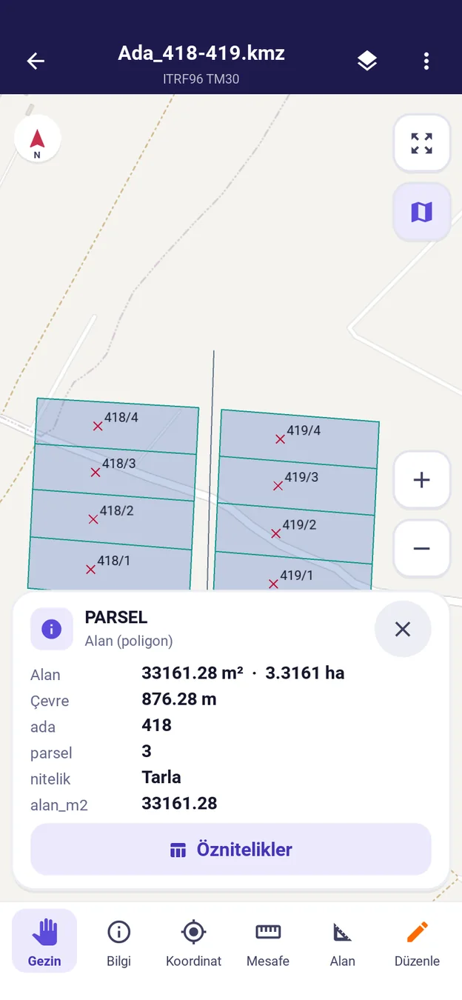
KML ve KMZ
Google Earth'te hazırlanmış ada ve parsel sınırlarını, yer işaretlerini ve güzergâhları açın; OpenStreetMap ya da OpenTopoMap altlığı üzerinde inceleyin. KMZ içindeki KML kendiliğinden açılır.
- Yer işareti adları haritada etiket olarak
- Altlık yalnızca siz seçince yüklenir
- Haritadaki çizimleri KML veya KMZ olarak Google Earth'e geri gönderin
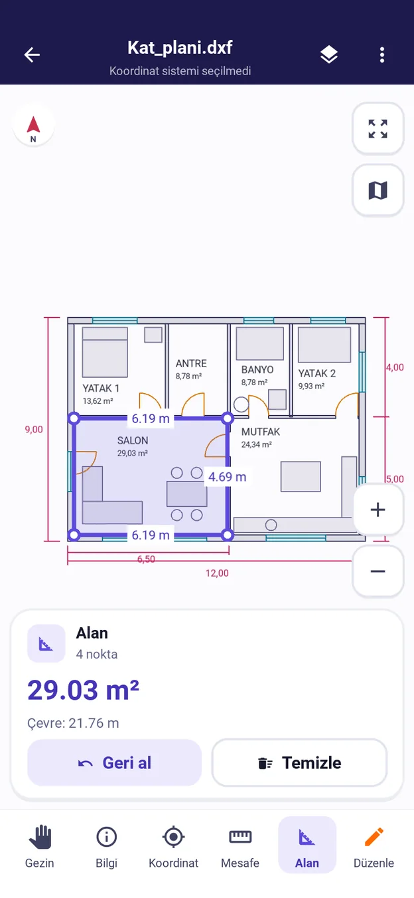
DWG ve DXF
AutoCAD kat planlarını, vaziyet planlarını ve krokileri telefonda açın. Katmanlar, yazılar, yaylar ve bloklar çizimdeki gibi; oda alanını ve duvar ölçülerini parmağınızla ölçün.
- Mesafe, alan ve çevre ölçümü, köşelere yakalanarak
- Proje koordinatlı çizimleri altlık üzerinde görün
- DWG salt okunur açılır; değişiklikler DXF olarak kaydedilir
Netcad NCZ
Netcad aplikasyon ve ölçüm dosyalarını açın. Örnekte ada 215 parsel 6 için bir aplikasyon projesi var: komşu parseller, çekme hattı, bina oturumu ve A1–A6 aplikasyon noktaları.
- Noktaya yakalanarak Y, X, enlem ve boylam
- TM 3° ITRF96 ve ED50, tüm dilimler
- Değişiklikleri yeniden NCZ olarak kaydedin (yazılar NCZ'ye aktarılmaz)
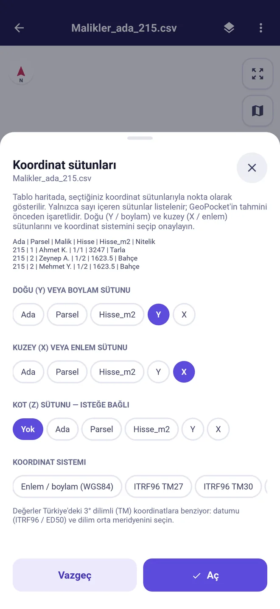
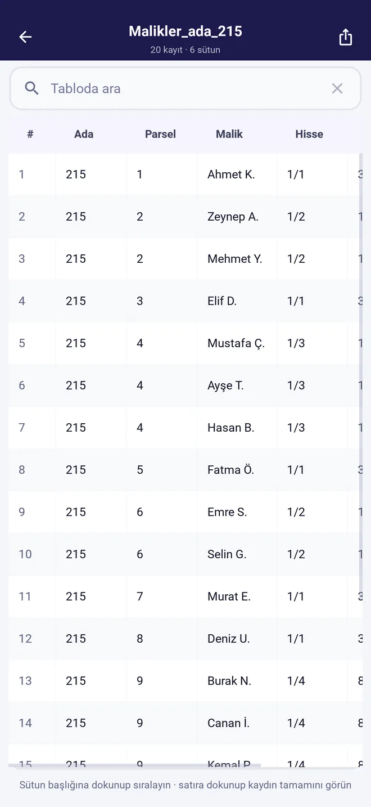
CSV ve Excel
Malik, hisse ve alan listelerini, nokta koordinatlarını haritaya getirin. Koordinat sütunlarını ve sistemini siz seçersiniz, GeoPocket tahminini önceden işaretler. WKT geometri sütunlu tablolar doğrudan açılır.
- Virgüllü ve noktalı ondalıklar
- Birden çok sayfalı Excel dosyaları
- Öznitelik tablosunu CSV veya XLSX olarak dışa aktarın
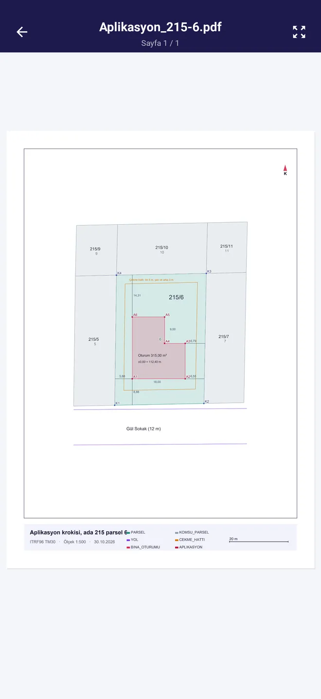
Haritayı başlık, ölçek, koordinat sistemi ve lejantla vektör PDF'e dökün; size gelen PDF paftaları yakınlaştırarak inceleyin. Örnek, aplikasyon projesinin A4 çıktısı.
- A4 ve A3, dikey veya yatay sayfa
- Yakınlaştırdıkça keskinleşen sayfa
- Çok sayfalı PDF'ler
Örnek dosyaları indirip kendiniz deneyin GeoPackage, GeoJSON, KMZ, DXF, NCZ, PDF, Excel, CSV ve DNS ile ED50 dönüşümü; veriler uydurmadır.
Sahada ihtiyaç duyduğunuz araçlar
Ölçüm ve koordinat okuma ücretsizdir. Düzenleme ve dönüştürme Pro ile ya da kısa bir videoyla 15 dakika açılır.
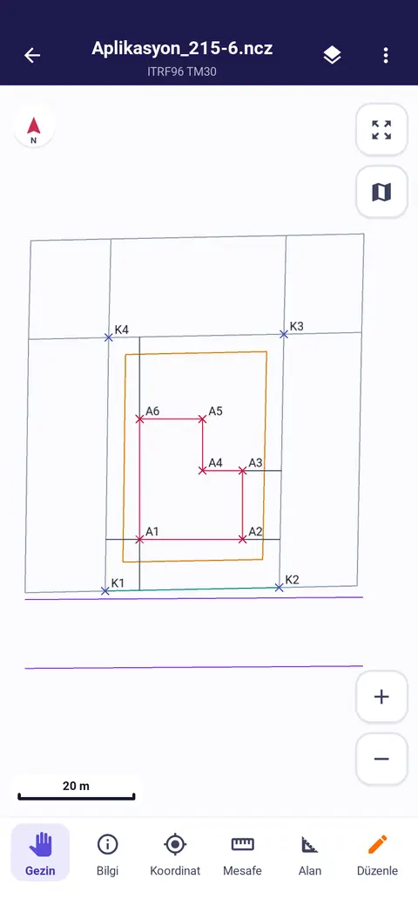
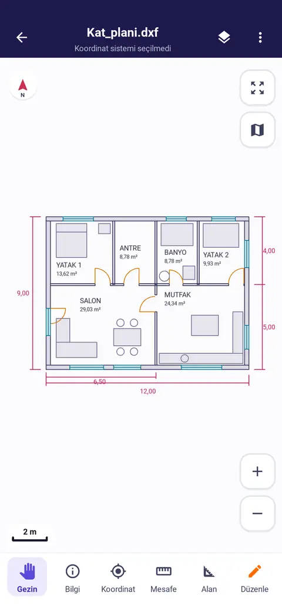
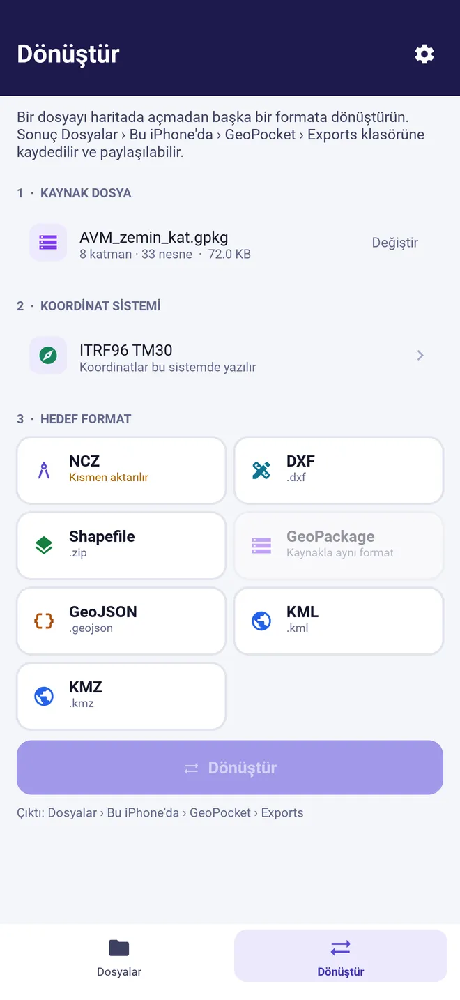
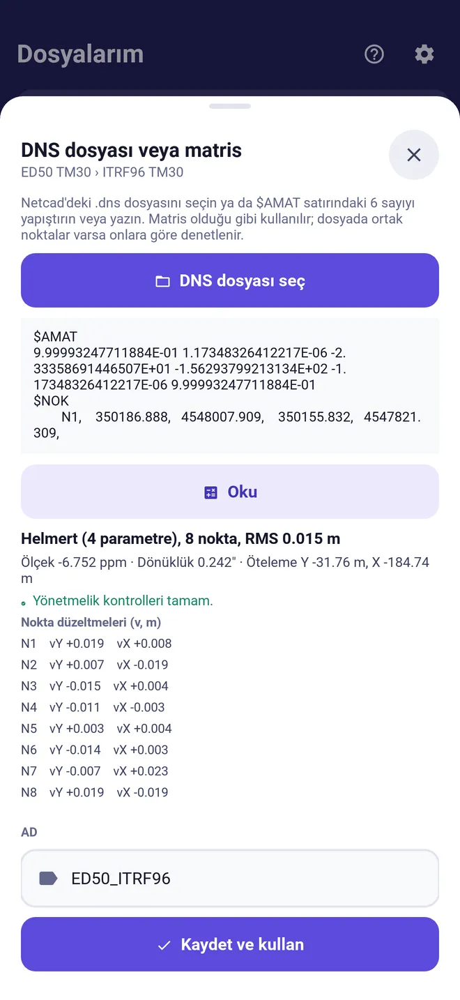
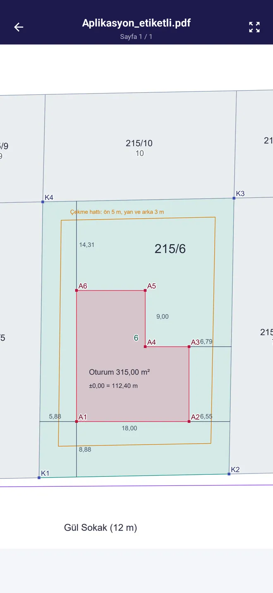
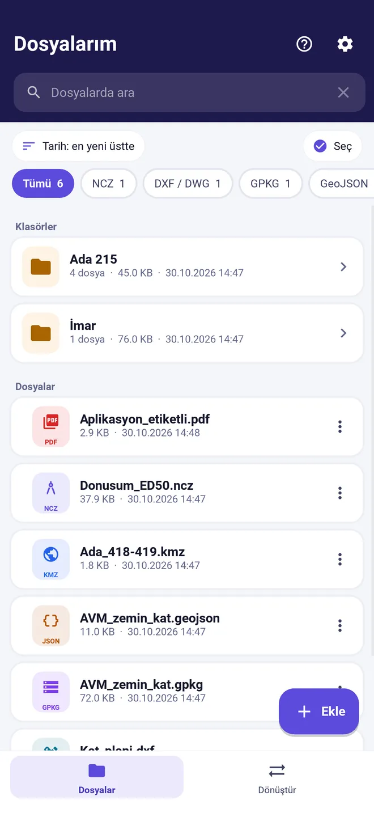
Düzenleme modunda (Pro) nokta, çizgi ve alan çizin ya da koordinatlarını yazarak ekleyin; öznitelikleri formdan girin. Değişiklikler dosyanın yanında saklanır, istediğinizde dışa aktarılır.
Formatlar ve koordinat sistemleri
Dosyalarınızı Dosyalar uygulamasından, başka bir uygulamanın Paylaş menüsünden ya da e-postadan açabilirsiniz.
Formatlar
| Format | Açma | Dışa aktarma ve dönüştürme |
|---|---|---|
| Shapefile (.shp, .zip) | Evet | Evet |
| GeoPackage (.gpkg) | Evet | Evet |
| GeoJSON (.geojson, .json) | Evet | Evet |
| KML / KMZ | Evet | Evet |
| DXF | Evet | Evet |
| DWG | Evet | Hayır, DXF olarak |
| Netcad NCZ | Evet | Evet |
| CSV / Excel (.xlsx) | Evet | Tablo olarak |
| Evet | Harita çıktısı olarak |
Koordinat sistemleri
| Sistem | Datum | Kapsam |
|---|---|---|
| TM 3° (Gauss-Krüger) | ITRF96, ED50 | 27°, 30°, 33°, 36°, 39°, 42°, 45° dilimleri |
| UTM 6° | WGS84, ED50 | Kuzey ve güney yarım küre, bütün dilimler |
| Coğrafi | WGS84 | Enlem ve boylam; derece veya derece, dakika, saniye |
| Web Mercator | WGS84 | EPSG:3857 |
| Dosyadan | .prj, GeoPackage, EPSG kodu | Kendiliğinden okunur, istediğinizde değiştirilir |
Ücretsiz başlayın, gerektiğinde Pro'ya geçin
Tüm dosyaları açmak ve ölçmek her zaman ücretsiz. Pro düzenleme, dışa aktarma ve dönüştürmeyi süresiz açar, reklamları kaldırır.
- Bütün formatları açma ve görüntüleme
- Alan, mesafe ve koordinat ölçümü
- Katmanlar, öznitelik tablosu, harita altlığı
- Düzenleme ve koordinatla ekleme
- Dışa aktarma ve format dönüştürme
- Reklamsız
- Bütün formatları açma ve görüntüleme
- Alan, mesafe ve koordinat ölçümü
- Katmanlar, öznitelik tablosu, harita altlığı
- Düzenleme ve koordinatla ekleme (15 dakika)
- Dışa aktarma ve format dönüştürme (15 dakika)
- Reklamsız
- Bütün formatları açma ve görüntüleme
- Alan, mesafe ve koordinat ölçümü
- Katmanlar, öznitelik tablosu, harita altlığı
- Düzenleme ve koordinatla ekleme
- Dışa aktarma ve format dönüştürme
- Reklamsız
| Özellik | ÜcretsizReklamlı | Video geçişiKısa bir video izleyin | ProAbonelik veya tek sefer |
|---|---|---|---|
| Bütün formatları açma ve görüntüleme | Evet | Evet | Evet |
| Alan, mesafe ve koordinat ölçümü | Evet | Evet | Evet |
| Katmanlar, öznitelik tablosu, harita altlığı | Evet | Evet | Evet |
| Düzenleme ve koordinatla ekleme | — | 15 dakika | Evet |
| Dışa aktarma ve format dönüştürme | — | 15 dakika | Evet |
| Reklamlar | Var | Var | Yok |
Fiyatlar Türkiye App Store ve Google Play fiyatlarıdır, vergiler dahildir; başka ülkelerde mağaza yerel fiyatı gösterir. Ödeme Apple ya da Google hesabınızdan alınır. Aylık ve yıllık abonelikler, dönem bitiminden en az 24 saat önce iptal edilmedikçe kendiliğinden yenilenir; iptal mağaza hesabınızın abonelikler bölümünden yapılır. Ayrıntılar: Kullanım koşulları.
Dosyalarınız telefonunuzda kalır
Ayrıntılar Gizlilik ve KVKK aydınlatma metninde. Sorularınız için Destek.
- Hesap gerekmez
- GeoPocket'i kullanmak için kayıt olmazsınız; ad, e-posta ya da telefon numarası istenmez.
- Sunucuya yükleme yok
- Dosyalar telefonda açılır, düzenlenir ve dönüştürülür. Geliştiricinin işlettiği bir sunucu yoktur.
- Reklam tercihi sizde
- Kişiselleştirilmiş reklam yalnızca açık rızanızla gösterilir; rıza vermezseniz uygulama aynen çalışır.
- Altlık isteğe bağlı
- Dosyalar altlıksız açılır. Altlık seçerseniz yalnızca görünen bölgenin harita karoları indirilir.
Sık sorulanlar
Hangi telefonlarda çalışır?
iPhone'da iOS 15 ve sonrası, Android'de Android 10 ve sonrası. Tablette telefon görünümüyle açılır.
İnternet gerekir mi?
Hayır. Dosyalar telefonda açılır ve işlenir. Yalnızca harita altlığını açarsanız harita karoları için internet kullanılır.
Dosyalarımı nasıl açarım?
Dosyalar uygulamasından, e-postadan ya da WhatsApp gibi bir uygulamanın Paylaş menüsünden GeoPocket'i seçin; ya da GeoPocket'te Dosya ekle'ye dokunun. Shapefile'ı .shp, .dbf, .shx ve .prj içeren tek bir ZIP olarak açabilirsiniz.
Netcad'e geri gönderebilir miyim?
Evet, çizimi NCZ olarak kaydedebilirsiniz. Yazılar NCZ'ye aktarılmaz; bu durumda dışa aktarmadan önce uyarılırsınız. DXF de Netcad'de açılır.
Pro aboneliğini nasıl iptal ederim?
iPhone'da Ayarlar › Apple Hesabı › Abonelikler, Android'de Google Play › Ödemeler ve abonelikler. Uygulamayı silmek aboneliği iptal etmez.